A little journey through the story that started with a Java trainer, a tiny crush… and one very important YES.
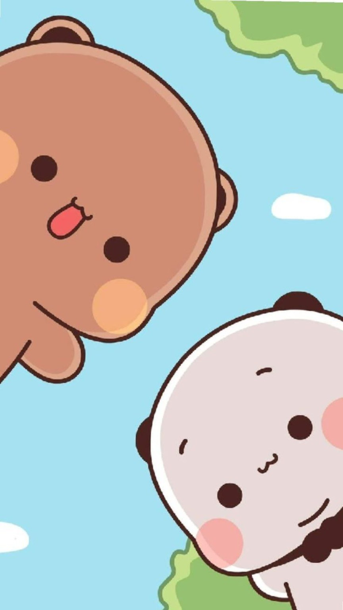
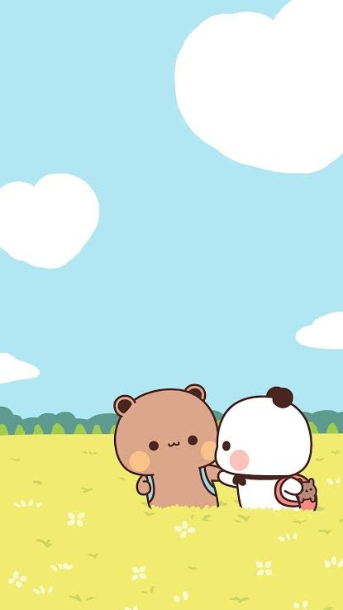
You were my junior at the office, and I was your Java trainer.
Somewhere between those trainings, I started noticing you a little more than I probably should have.
I had a little crush on you… so I kept finding reasons to talk to you, even when you seemed barely interested. 😂
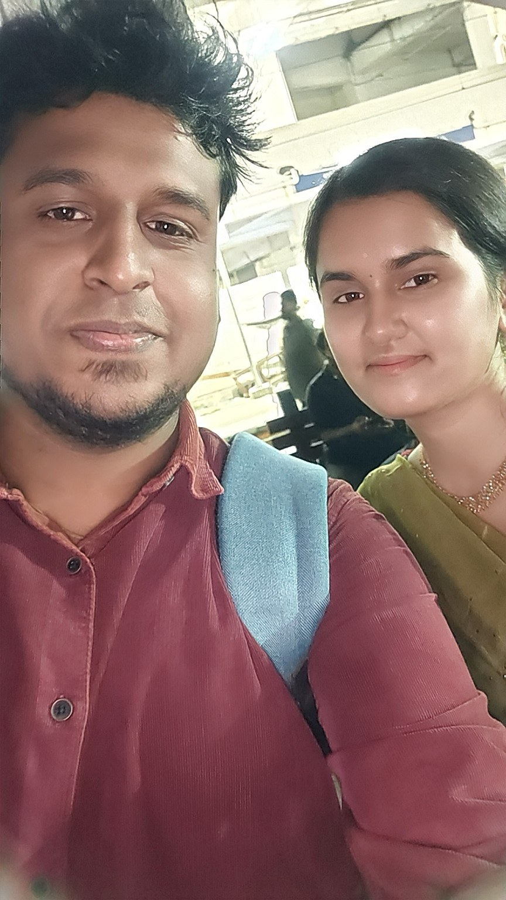
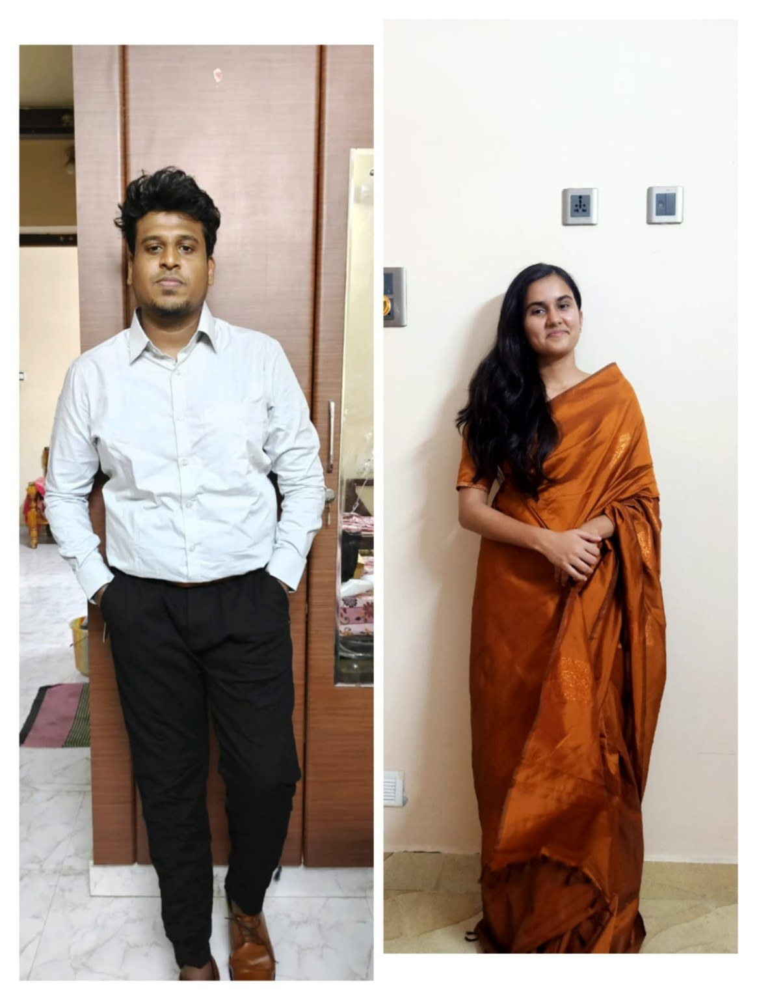
We got close by chatting every day.
I started dropping you home on my bike, and those ordinary rides quietly became some of my favourite parts of the day. 🏍️❤️
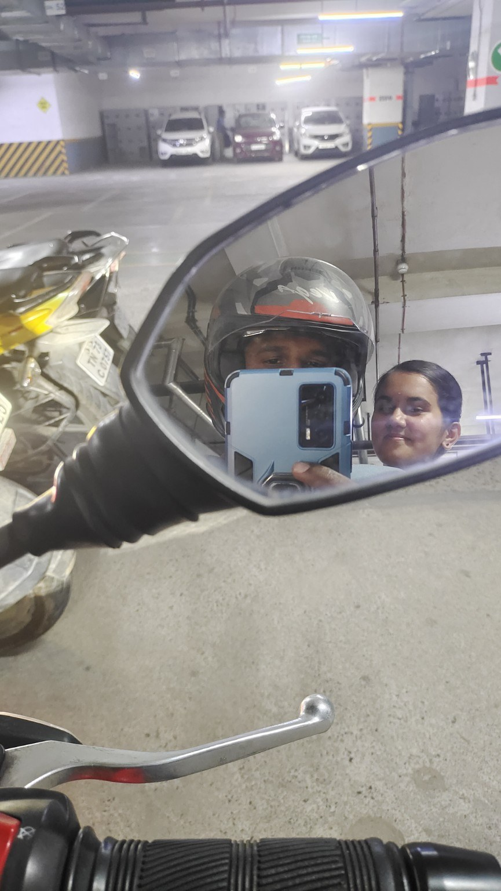
Then came our first proper outing — lunch at LYF by Soul Garden Bistro.
It was such a simple day, but somehow it became one of those memories that stayed with me.
The place. The travel. The bike ride. The conversations. Just being with you.
Even today, I can still see that day in my mind. ❤️
Then came our annual outing to Coorg.
We spoke for a couple of hours each day, and those conversations became some of the most beautiful memories of that time.
I think that was the moment you started liking me a little more too. ❤️
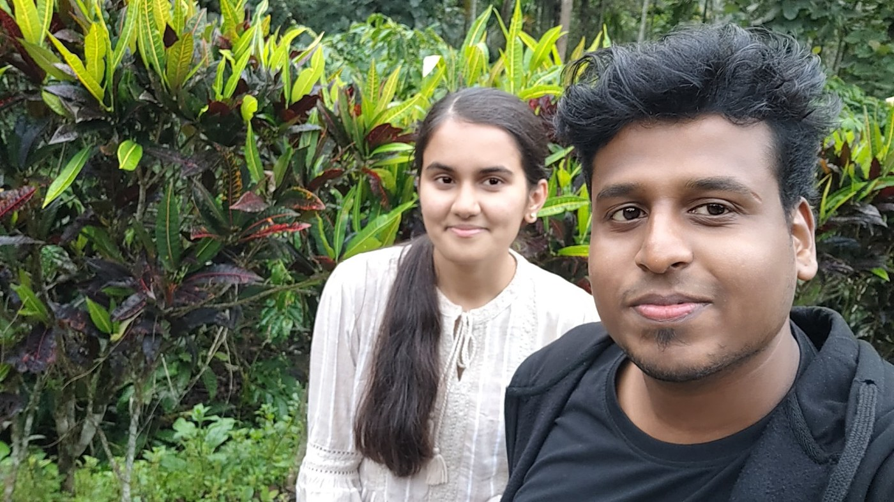
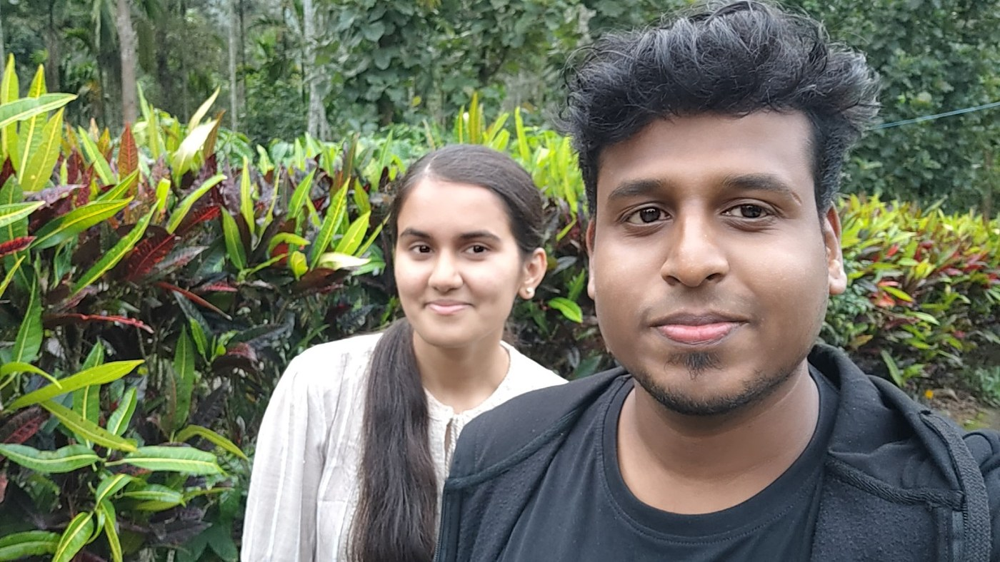
Then you moved to another location.
Honestly… I was shattered.
But somehow, we still met at the railway station sometimes.
Five minutes. That was all it took to make my day.
I would wait just for those five minutes — just to see you, talk to you and be around you.
Because whenever I was with you, time was never on our side. 🥹
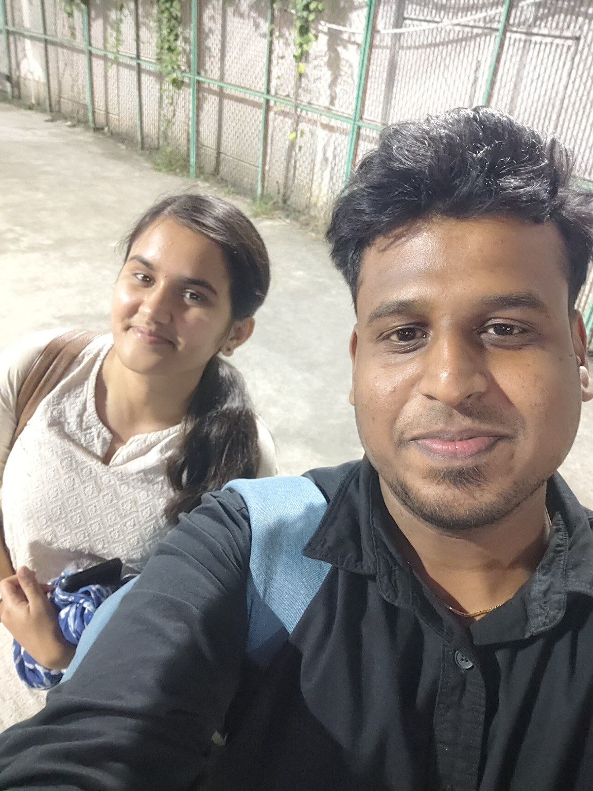
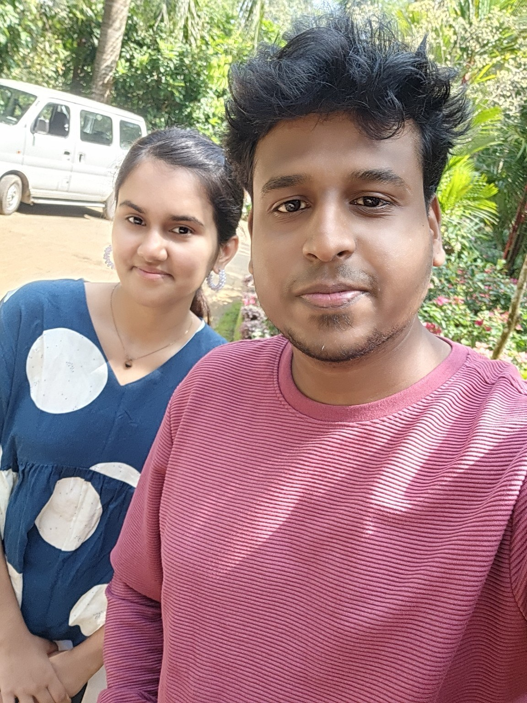
Eventually, I moved to your location again.
We started talking, going out and creating memories like it was the most natural thing in the world.
And then came September 22, 2024.
You accepted my love.
I was the happiest person on earth.
That was the day I got the love of my life. ❤️
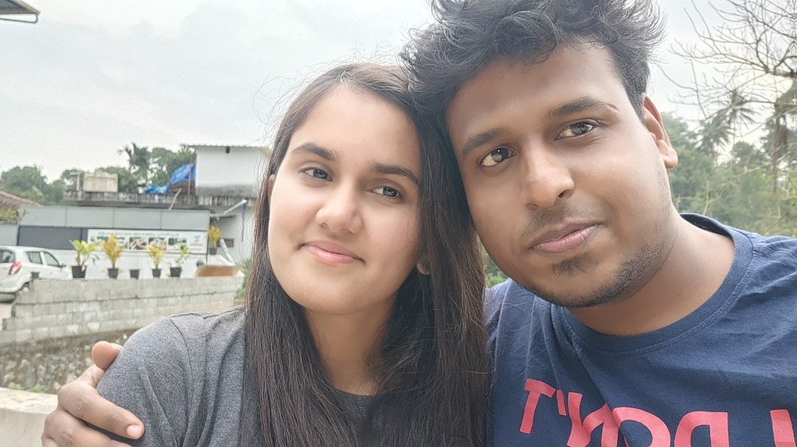
From a little crush at the office…
to everyday conversations, bike rides, our first outing, Coorg, railway-station meetings and countless little memories…
You've become such a beautiful part of my life.
And Bubu, I have one tiny question for you… 😌
Two years ago, you said YES.
After everything we've shared… would you say it one more time?
Two years ago, you said YES to me.
Today, I'd choose you all over again.
Happy 2nd Anniversary, Bubu. ❤️
Thank you for being my favourite part of this journey.
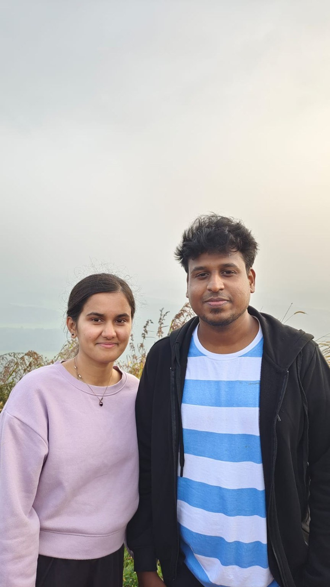
Here's to all the memories we've made… and all the ones still waiting for us. 🫶